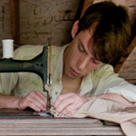

Self-taught steampunk seamstress, Stephanie Schultz, doesn’t design regular clothes. She designs a lifestyle inspired by an era of embellishment, luxury, and storytelling. Her line Silversärk is modern day Victorian garb with a Japanese twist fit for a Lord or Lady. Her elegant gothic designs are intricate, filled with lace, layers, and a certain level of intriguing darkness...[read more]
IN THIS ISSUE:
Runaway! by Sara Terrell
Budding Milwaukee designer Sara Terrell is one of a kind, just like her fashion line Run Away! by Sara Terrell. Designing before she could even sew, Terrell always had an interest in fashion. She used high school Homecoming as her runway debut by designing her own dress...[read more]
 Timothy Westbrook
Fashion can be garbage, and it can be art. That transformation takes place in 24 year old Timothy Westbrook’s studio in downtown Milwaukee. He is most known for his intricate weavings of ball gown, scarves and jackets made out of old plastic bags and cassette tape film, or his shoe...[read more]
FM Style Studio
When fashion capitals come to mind, Milwaukee isn’t the first name to run off the tip of people’s tongues- if it’s mentioned at all. FM Style Studio is seeking to change that attitude by showcasing some of the city’s fashion minded folks and helping to create a creative community...[read more]
MilwaukeeHome
Melissa Thorton started MilwaukeeHome without the intention of it being anything more than a thoughtful gift for a friend. A hoodie design turned store and company is serendipity at its finest. Home is afterall where the heart is, and our hearts are often worn on our sleeves. The brand, which she...[read more]
Alexis Rose
Alexis Rose is Milwaukee’s it girl when it comes to fashion. She has also been Timothy Westbrook’s right hand woman when it comes to styling his fashion shows, and she has recently ventured off on her own and was responsible for curating the entire fashion event...[read more]